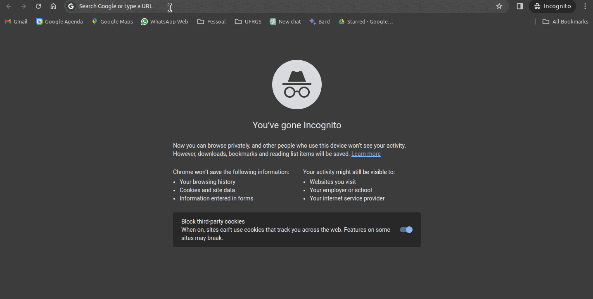

1 Introdução
Segundo o site quanthub.com, a cada minuto, o tempo para ler alguns parágrafos deste livro, 204 milhões de emails são enviados. Para ter uma ideia de volume, isso é aproximadamente o envio de um email por minuto por cada habitante do Brasil. É indiscutível que estamos vivendo em um momento histórico de maciça produção e armazenamento de informação. Ao mesmo tempo em que o volume de dados cresceu exponencialmente, as aplicações de análise de dados também seguiram o mesmo padrão. Usando o exemplo do email, não tenho dúvida que essa volumosa base de dados dos emails é processada em servidores de alta performance, em busca de informações com finalidade comercial.
Assim, um ambiente competitivo motiva as empresas a investirem e competirem na formação de equipes especializadas em análise de dados. Sem dúvida, o período atual é bastante positivo para profissionais com conhecimento e experiência na utilização das ferramentas corretas para a análise computacional de dados. É nesse ambiente que se destaca o papel do R, uma linguagem de programação voltada para a resolução de problemas computacionais envolvendo análise, processamento, visualização e modelagem de dados. Nas próximas seções, explicarei o que é o R e quais são suas vantagens frente a outras alternativas.
1.1 O que é o R
O R é uma linguagem de programação criada em 1993, e voltada para a resolução de problemas estatísticos e visualização gráfica de dados. O código base do R foi inspirado na linguagem S, inicialmente criada no laboratório da Bell/AT&T por John Chambers e seus colegas. A ideia de criar uma linguagem de programação voltada a estatística foi redesenhada por dois acadêmicos, Ross Ihaka e Robert Gentleman, ambos da universidade de Auckland, Nova Zelândia.
Hoje, R é sinônimo de programação voltada à análise de dados, com uma larga base de usuários acadêmicos e da indústria. É muito provável que analistas de áreas diversas, desde Economia até Biologia, ou mesmo Música, encontrem no R uma quantidade significativa de códigos que facilitem suas análises. No campo empresarial, grandes empresas como Google e Microsoft já adotaram o R como a linguagem interna para a análise de dados. O R é atualmente mantido pelo R Foundation e o R Consortium, um esforço coletivo para financiar projetos de extensão da linguagem.
E o mais importante: o R é totalmente livre e disponível em vários sistemas operacionais. Seja você um usuário do Windows, do Linux/Unix ou do MacOS, existe uma instalação do R para a sua plataforma, e os seus códigos devem rodar entre uma e outra com mínimas alterações.
Qual a origem do nome R?
O que pode ser dito como um ato pouco criativo, os desenvolvedores escolheram a letra R pois era a primeira letra de seus primeiros nomes, Ross e Robert. Possivelmente, foi uma brincadeira com a linguagem S, a qual serviu de inspiração para o R.
1.2 Por que Escolher o R
Possivelmente você esteja se perguntando por que deve optar pelo R e investir tempo em sua aprendizagem, ao invés de escolher uma outra linguagem.
Em primeiro lugar, o R é uma plataforma madura, estável, continuamente suportada e intensamente utilizada na indústria. Ao escolher o R, você terá a bagagem computacional necessária não somente para uma carreira acadêmica em pesquisa científica, mas também para o trabalho em organizações privadas. Nesse sentido, com a escolha de outra linguagem de programação menos popular ou proprietária/comercial, é provável que tal linguagem não seja utilizada em um ambiente empresarial e isso pode limitar as suas futuras oportunidades profissionais. Sem dúvida, o conhecimento de programação em um plataforma aberta de análise de dados aumenta a sua atratividade como profissional.
Aprender a linguagem do R é fácil. A experiência que tenho ensinando o R em sala de aula me permite afirmar que os alunos, mesmo aqueles sem experiência em programação, apresentam facilidade em aprender a linguagem e em utilizá-la para criar seus próprios códigos de pesquisa. A linguagem é intuitiva e certas normas e funções podem ser estendidas para diferentes casos. Após entender como o programa funciona, fica fácil descobrir novas funcionalidades partindo de uma lógica anterior. Essa notação compartilhada entre procedimentos facilita o aprendizado.
A interface do R e RStudio torna o uso da ferramenta bastante produtivo. A interface gráfica aberta e gratuita disponibilizada pela RStudio/Posit facilita o uso do software, assim como a produtividade do usuário. Utilizando o ambiente de trabalho integrado do R e o RStudio, têm-se a disposição diversas ferramentas que facilitam e estendem o uso da plataforma.
Os pacotes do R permitem as mais diversas funcionalidades. Logo veremos que o R permite o uso de código de outros usuários, os quais podem ser localmente instalados através de um simples comando. Esses estendem a linguagem básica do R e possibilitam as mais diversas funcionalidades. Além das funções óbvias de analisar dados, podes utilizar o R para mandar emails, escrever e publicar um livro, contar piadas e poemas (é sério!), utilizar o chat GPT para responder perguntas, acessar e coletar dados da internet, entre diversas outras funcionalidades.
O R tem compatibilidade com diferentes linguagens e sistemas operacionais. Se, por algum motivo, o usuário precisar utilizar código de outra linguagem de programação tal como C++, Python, Julia, é fácil integrar a mesma dentro de um programa do R. Diversos pacotes estão disponíveis para facilitar esse processo. Portanto, o usuário nunca fica restrito a uma única linguagem e tem flexibilidade para escolher as suas ferramentas de trabalho.
O R é totalmente gratuito! O programa e todos os seus pacotes são completamente livres, não tendo custo algum de licença e distribuição. Portanto, você pode utilizá-lo e modificá-lo livremente no seu trabalho ou computador pessoal. Essa é uma razão muito forte para a adoção da linguagem em um ambiente empresarial, onde a obtenção de licenças individuais e coletivas de outros softwares comerciais pode incidir um alto custo financeiro.
1.3 Usos do R
O R é uma linguagem de programação completa e qualquer problema computacional relacionado a dados pode ser resolvido com base nela. Dada a adoção do R por diferentes áreas de conhecimento, a lista de possibilidades é extensa. Para o caso de Finanças e Economia, destaco abaixo as possíveis utilizações do programa:
Substituir e melhorar tarefas intensivas e repetitivas dentro de ambientes corporativos, geralmente realizadas em planilhas eletrônicas;
Criação de relatórios estruturados periódicos com a tecnologia RMarkdown e quarto. Podes, por exemplo, criar um relatório automatizado que importe dados brutos e analise um conjunte de dados de vendas no mês.
Desenvolvimento de rotinas para administrar portfolios de investimentos e executar ordens financeiras;
Criação de ferramentas para controle, avaliação e divulgação de índices econômicos sobre um país ou região;
Execução de diversas possibilidades de pesquisa científica através da estimação de modelos econométricos e testes de hipóteses;
Criação e manutenção de websites dinâmicos ou estáticos através do pacotes {shiny} (Chang et al. 2024), {blogdown} (Xie, Dervieux, e Presmanes Hill 2024) ou {distill} (Dervieux et al. 2023);
Além dos usos destacados anteriormente, o acesso público a pacotes desenvolvidos por usuários expande ainda mais essas funcionalidades. O site do CRAN (Comprehensive R Archive Network) oferece um painel com uma lista de pacotes separadas por temas, incluindo Finanças e Econometria.
Encontrando pacotes para determinada área
A página do task views, localizada em https://cran.r-project.org/web/views é um ótimo lugar para estudar pacotes e buscar soluções para um problema específico. Lá encontrarás os pacotes separados por tema e subtema específico, assim como também uma breve descrição. Porém, saiba que a lista é moderada com baixa frequência de atualização, e apresenta apenas os principais itens. A lista completa de pacotes é muito maior do que o apresentado no Task Views.
1.4 Como Instalar o R
O R é instalado no seu sistema operacional como qualquer outro programa. A maneira mais direta e funcional de instalá-lo é ir ao website do R em https://www.r-project.org/ e clicar no link CRAN do painel Download, conforme mostrado na animação em Figura 1.1.
Resumindo, os passos para a instalação do R no Windows são:
Após clicar em Download-CRAN, a próxima tela apresenta a escolha do espelho para baixar os arquivos de instalação. O repositório do CRAN é espelhado em diversas partes do mundo, permitindo acesso rápido para os usuários. Para a grande maioria dos leitores deste livro, essa localidade deve ser o Brasil. Portanto, você pode escolher um dos links da instituição mais próxima, tal como o da UFPR (Universidade Federal do Paraná). Em caso de dúvida, escolha o repositório do RStudio 0-Cloud, o qual automaticamente direciona para o local mais próximo.
O próximo passo é selecionar o sistema operacional do computador. Devido à maior popularidade da plataforma Windows, a partir de agora daremos enfoque à instalação do R nesse sistema. As instruções de instalação nos demais sistemas operacionais podem ser facilmente encontradas na internet. Destaca-se que, independente da plataforma, o modo de uso do R é o mesmo. Existem, porém, algumas exceções, principalmente quando o R interage com o sistema de arquivos.
Após clicar no link Download R for Windows, a próxima tela irá mostrar as seguintes opções de download: base, contrib, old.contrib e RTools. Dentre as opções de download, a primeira (base) deve ser selecionada. O link acessa a instalação básica do R para Windows. O link contrib e old.contrib acessa os arquivos dos pacotes/módulos disponíveis para o R. Não precisas acessar estes últimos links, existe uma maneira muito mais fácil de baixar e instalar pacotes, como veremos em seguida. O último link, RTools, serve para instalar dependências necessárias para compilar dependências em outras linguagens de programação. Minha sugestão é que já instale o Rtools pois, a medida que for instalando novos pacotes, o mesmo se tornará parte essencial no uso do R.
Após clicar no link base, a próxima tela mostrará o link para o download do arquivo de instalação do R no Windows. Após baixar o arquivo, abra-o e siga os passos da tela de instalação do R. Escolha a língua inglesa em todas etapas do processo. O uso da língua inglesa não é acidental. Este é a melhor forma, mesmo para iniciantes, de se aprender a usar o R. É possível instalar uma versão em português porém isso limita o potencial da ferramenta. Caso não for fluente em inglês, não se preocupe, o vocabulário necessário é básico. Neste momento, nenhuma outra configuração especial é necessária. Sugiro manter todas as escolhas padrão selecionadas e simplesmente ir aceitando as telas de diálogo. Após a instalação do R, partimos para a instalação do RStudio.
Importante
A cada quatro meses uma nova versão do R é lançada, corrigindo bugs e implementando novas soluções. Temos dois tipos principais de versões, major e minor. Por exemplo, na data de compilação do livro, 29/04/2024, a última versão disponível do R é 4.4.0. O primeiro dígito (4) indica a versão major e todos os demais são do tipo minor. Geralmente, as mudanças minor são bem específicas e, possivelmente, terão pouco impacto no seu trabalho.
Porém, mudanças do tipo major refletem totalmente no ecossistema de pacotes do R. Toda vez que instalar uma nova versão major do R, o diretório onde os pacotes são instalados é renovado, isto é, terás que reinstalar todos os pacotes utilizados no seu trabalho. O problema é que não é incomum problemas de incompatibilidade de pacotes com a nova versão.
Minha dica é: toda vez que uma nova versão major do R sair, espere algumas semanas ou até um mês antes de instalar na sua máquina. Assim, o autores dos pacotes terão mais tempo para atualizar os seus códigos, minimizando a possibilidade de problemas de compatibilidade.
1.5 Instalando o RStudio
A instalação do R inclui a sua própria interface gráfica, um programa que facilita a edição e execução de nossos scripts. Essa, porém, possui várias limitações. O RStudio é um software que torna o uso e o visual do R muito mais prático e eficiente. Uma forma de entender essa relação é com uma analogia com carros. Enquanto o R é o motor da linguagem de programação, o RStudio é a carroceria e o painel de instrumentos. Além de apresentar um visual mais atrativo, o RStudio também é acrescido de várias funcionalidades que facilitam a vida do usuário, possibilitando a construção de projetos e pacotes do próprio R, a criação de documentos dinâmicos (rmarkdown/quarto) e a interface com edição de textos em LaTeX, entre várias outras. Assim como o R, o RStudio também é gratuito e pode ser utilizado no ambiente empresarial.
A instalação do RStudio é mais simples do que a do R. Os arquivos estão disponíveis no endereço disponibilizado no site da empresa Posit. Após acessar a página, clique em Download RStudio e depois em Download Rstudio Desktop. Logo após, basta selecionar o arquivo relativo ao sistema operacional em que você irá trabalhar. Provavelmente, essa opção será Windows Vista/7/8/10. Note que, assim como o R, o RStudio também está disponível para diferentes plataformas.
Destaco que o uso do RStudio não é essencial para desenvolver programas no R. Outros softwares de interface estão disponíveis e podem ser utilizados. Porém, dada minha experiência atual, o RStudio é o programa de interface que oferece a maior variedade de funcionalidades para essa linguagem, além de ser amplamente utilizado, o que justifica a sua escolha. Como uma alternativa ao RStudio, sugiro o vscode, o qual possui uma ótima integração com o R.
1.6 Recursos na Internet
A comunidade R é viva e envolvente. Na internet é possível encontrar uma diversidade de material sobre o uso do R. Diversos usuários, assim como o próprio autor do livro, publicam material sobre o uso R em seus blogs. Isso inclui anúncios de pacotes, publicações sobre análise de dados na vida real, curiosidades, novidades e tutoriais. R-Bloggers é um site internacional que agrega esses blogs em um único local, tornando mais fácil para qualquer um acessar e participar. O conteúdo do R-Bloggers, porém, é todo em inglês.
Recentemente, uma lista de blogs locais sobre o R está compilada e organizada por Marcos Vital no Github. Eu recomendo a inscrição no feed do R-Bloggers, além dos blogs nacionais. Não só você será informado sobre o que está acontecendo no universo do R, mas também aprenderá muito lendo artigos e os códigos de outros usuários.
Aprender e usar R pode ser uma experiência social. Várias conferências e grupos de usuários estão disponíveis em muitos países, incluindo o Brasil. O grupo R Brasil - Programadores no Facebook é bastante ativo, com um grande número de participantes. Recomendo fortemente a inscrição neste grupo e o acompanhamento das discussões relacionadas ao uso do R. Diversas conferências locais sobre o R são divulgadas nesse grupo.
1.7 Exercícios
Q.1 - A primeira versão do R foi desenvolvida com base em qual outra linguagem de programação?
- Python
- Javascript
- C++
- S
- Julia
Q.2 - Qual o nome dos autores da primeira versão do R?
- Linus Torvalds e Richard Stallman
- Guido van Rossum e Bjarne Stroustrup
- Ross Ihaka e Robert Gentleman
- John Chambers e Robert Engle
- Roger Federer e Rafael Nadal
Q.3 - Qual o principal diferencial do R em relação a outras linguagens de programação, tal como Python, C++, javascript e demais?
- Execução rápida de códigos
- Facilita o desenvolvimento de aplicativos web
- Facilita o desenvolvimento de aplicativos para celular
- Facilidade de uso, em geral
- Facilidade para a análise estatística de dados
Q.4 - Qual a razão para o nome da linguagem de programação ser R?
- Compartilhamento da letra R por seus autores.
- R = Reausable code.
- Era a única letra ainda não usada como linguagem de programação.
- A mãe de um dos autores se chamada Renata e, por isso, ele homenageou-a com o nome R.
- Uma letra foi sorteada na própria linguagem de programação, e o resultado foi R.
Q.5 - Sobre o R, considere as seguintes alternativas:
I - O R foi desenvolvido em 2018 e é um projeto inovador porém, instável;
II - O RStudio é uma linguagem de programação alternativa ao R;
III - O R tem compatibilidade com diferentes linguagens de programação;
Quais alternativas estão corretas?
- TRUE, TRUE, TRUE
- TRUE, TRUE, FALSE
- FALSE, FALSE, TRUE
- FALSE, FALSE, FALSE
- FALSE, TRUE, TRUE
Q.6 - Assim que tiver R e RStudio instalado, dirija-se ao site de pacotes do CRAN1 e procure por tecnologias que usas no seu trabalho. Por exemplo, se usas Planilhas do Google (Sheets)2 ostensivamente no seu trabalho, logo descobrirá que existe um pacote no CRAN que interage com planilhas do Google na nuvem.
Q.7 - No site de instalação do R no Windows é possível instalar também o aplicativo Rtools. Para que ele serve?
- Compilação de pacotes do R no Windows
- Fazer café (?)
- Construir páginas na web
- Compilar relatórios técnicos
- Criar gráficos
Q.8 - Use o Google para pesquisar por grupos de R em sua região. Verifique se os encontros são frequentes e, caso não tiver um impedimento maior, vá para um desses encontros e faça novos amigos.
Q.9 - Dirija-se ao site do RBloggers3 e procure por um tópico do seu interesse, tal como futebol (soccer) ou investimentos (investments). Leia pelo menos três artigos encontrados.
Q.10 - Caso trabalhe em uma instituição com infraestrutura de computação, converse com o encarregado e busque entender quais são as tecnologias empregadas. Verifique se, através do R, é possível ter acesso a todas tabelas dos bancos de dados. Por enquanto não existe necessidade de escrever código, ainda. Apenas verifique se esta possibilidade existe.